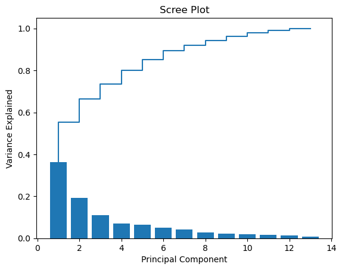

import matplotlib.pyplot as plt
import numpy as np
import pandas as pd
from sklearn.datasets import load_wine
# Get wine data
data_wine = load_wine(as_frame=True)
X = data_wine.data
y = data_wine.targetExercise Set 5: Unsupervised learning & Text as data
In this exercise set, we will be looking at:
- Unsupervised learning, focusing on the canonical
Principal Component AnalysisandK-meansfor dimensionality reduction and clustering, respectively - Text as data, focusing on
VADERandbag-of-wordsmodels
The focus in the first part is implementing the methods using sklearn and then how we can use and evaluate these methods. In the second part, we see how we can use text as both unsupervised input to dictionary based methods, but also how the more general bag-of-words models allow us to use text as regular tabular input.
Unsupervised learning
The dataset we will be looking at this time is the UCI ML Wine recognition dataset. This features analysis of 178 wines from three different wine manufacturers, and as it is often used you will be able to find examples analyzing this online. Furthermore, this entails that we have a ground truth for our clustering algorithms, which is nice to know when getting started with clustering. As last time, you’re welcome to use a dataset of your own.
Load data
Here we load our input data into a DataFrame called X and our target data into a Series
Here we describe the data using both the documentation which came with the data, but also by computing summary statistics for the input data and value counts for the target.
Consider whether the input features are measured on the same scale and whether the classes heavily skewed.
print(data_wine.DESCR).. _wine_dataset:
Wine recognition dataset
------------------------
**Data Set Characteristics:**
:Number of Instances: 178
:Number of Attributes: 13 numeric, predictive attributes and the class
:Attribute Information:
- Alcohol
- Malic acid
- Ash
- Alcalinity of ash
- Magnesium
- Total phenols
- Flavanoids
- Nonflavanoid phenols
- Proanthocyanins
- Color intensity
- Hue
- OD280/OD315 of diluted wines
- Proline
- class:
- class_0
- class_1
- class_2
:Summary Statistics:
============================= ==== ===== ======= =====
Min Max Mean SD
============================= ==== ===== ======= =====
Alcohol: 11.0 14.8 13.0 0.8
Malic Acid: 0.74 5.80 2.34 1.12
Ash: 1.36 3.23 2.36 0.27
Alcalinity of Ash: 10.6 30.0 19.5 3.3
Magnesium: 70.0 162.0 99.7 14.3
Total Phenols: 0.98 3.88 2.29 0.63
Flavanoids: 0.34 5.08 2.03 1.00
Nonflavanoid Phenols: 0.13 0.66 0.36 0.12
Proanthocyanins: 0.41 3.58 1.59 0.57
Colour Intensity: 1.3 13.0 5.1 2.3
Hue: 0.48 1.71 0.96 0.23
OD280/OD315 of diluted wines: 1.27 4.00 2.61 0.71
Proline: 278 1680 746 315
============================= ==== ===== ======= =====
:Missing Attribute Values: None
:Class Distribution: class_0 (59), class_1 (71), class_2 (48)
:Creator: R.A. Fisher
:Donor: Michael Marshall (MARSHALL%PLU@io.arc.nasa.gov)
:Date: July, 1988
This is a copy of UCI ML Wine recognition datasets.
https://archive.ics.uci.edu/ml/machine-learning-databases/wine/wine.data
The data is the results of a chemical analysis of wines grown in the same
region in Italy by three different cultivators. There are thirteen different
measurements taken for different constituents found in the three types of
wine.
Original Owners:
Forina, M. et al, PARVUS -
An Extendible Package for Data Exploration, Classification and Correlation.
Institute of Pharmaceutical and Food Analysis and Technologies,
Via Brigata Salerno, 16147 Genoa, Italy.
Citation:
Lichman, M. (2013). UCI Machine Learning Repository
[https://archive.ics.uci.edu/ml]. Irvine, CA: University of California,
School of Information and Computer Science.
.. topic:: References
(1) S. Aeberhard, D. Coomans and O. de Vel,
Comparison of Classifiers in High Dimensional Settings,
Tech. Rep. no. 92-02, (1992), Dept. of Computer Science and Dept. of
Mathematics and Statistics, James Cook University of North Queensland.
(Also submitted to Technometrics).
The data was used with many others for comparing various
classifiers. The classes are separable, though only RDA
has achieved 100% correct classification.
(RDA : 100%, QDA 99.4%, LDA 98.9%, 1NN 96.1% (z-transformed data))
(All results using the leave-one-out technique)
(2) S. Aeberhard, D. Coomans and O. de Vel,
"THE CLASSIFICATION PERFORMANCE OF RDA"
Tech. Rep. no. 92-01, (1992), Dept. of Computer Science and Dept. of
Mathematics and Statistics, James Cook University of North Queensland.
(Also submitted to Journal of Chemometrics).
X.describe()| alcohol | malic_acid | ash | alcalinity_of_ash | magnesium | total_phenols | flavanoids | nonflavanoid_phenols | proanthocyanins | color_intensity | hue | od280/od315_of_diluted_wines | proline | |
|---|---|---|---|---|---|---|---|---|---|---|---|---|---|
| count | 178.000000 | 178.000000 | 178.000000 | 178.000000 | 178.000000 | 178.000000 | 178.000000 | 178.000000 | 178.000000 | 178.000000 | 178.000000 | 178.000000 | 178.000000 |
| mean | 13.000618 | 2.336348 | 2.366517 | 19.494944 | 99.741573 | 2.295112 | 2.029270 | 0.361854 | 1.590899 | 5.058090 | 0.957449 | 2.611685 | 746.893258 |
| std | 0.811827 | 1.117146 | 0.274344 | 3.339564 | 14.282484 | 0.625851 | 0.998859 | 0.124453 | 0.572359 | 2.318286 | 0.228572 | 0.709990 | 314.907474 |
| min | 11.030000 | 0.740000 | 1.360000 | 10.600000 | 70.000000 | 0.980000 | 0.340000 | 0.130000 | 0.410000 | 1.280000 | 0.480000 | 1.270000 | 278.000000 |
| 25% | 12.362500 | 1.602500 | 2.210000 | 17.200000 | 88.000000 | 1.742500 | 1.205000 | 0.270000 | 1.250000 | 3.220000 | 0.782500 | 1.937500 | 500.500000 |
| 50% | 13.050000 | 1.865000 | 2.360000 | 19.500000 | 98.000000 | 2.355000 | 2.135000 | 0.340000 | 1.555000 | 4.690000 | 0.965000 | 2.780000 | 673.500000 |
| 75% | 13.677500 | 3.082500 | 2.557500 | 21.500000 | 107.000000 | 2.800000 | 2.875000 | 0.437500 | 1.950000 | 6.200000 | 1.120000 | 3.170000 | 985.000000 |
| max | 14.830000 | 5.800000 | 3.230000 | 30.000000 | 162.000000 | 3.880000 | 5.080000 | 0.660000 | 3.580000 | 13.000000 | 1.710000 | 4.000000 | 1680.000000 |
y.value_counts()1 71
0 59
2 48
Name: target, dtype: int64Dimensionality reduction
As we saw, the data has 13 dimensions, and the goal of this section is to reduce this to a lower amount of dimensions.
This can be done for many reasons, including:
- Reduce computation time
- Performance increases
- Visualization
This we will do using principal component analysis. All the same things regarding data leakage from train to test data carries over from supervised learning, but we will disregard this aspect and use all data at once for simplicity. Later on, it can be used in a step in your pipelines, and it will only learn from the train data.
Exercise 1.1
Fill in the missing code to perform a principal component analysis using
sklearnHints: > Were all the variables on the same scale?
from sklearn.preprocessing import # FILL IN
from sklearn.decomposition import # FILL IN
# Step one
sc = # FILL IN
sc.fit(X)
X_std = sc.transform(X)
# Step two
pca = # FILL IN
pca.fit(X_std)
X_pca = pca.transform(X_std)
### BEGIN SOLUTION
from sklearn.preprocessing import StandardScaler
from sklearn.decomposition import PCA
# Standardize
sc = StandardScaler()
sc.fit(X)
X_std = sc.transform(X)
# PCA
pca = PCA()
pca.fit(X_std)
X_pca = pca.transform(X_std)
### END SOLUTIONExercise 1.2
- What are the dimensions of
X_pca?- Have you reduced the dimensionality?
Hints: > The shape of an array can be determined using
.shape
# Your code### BEGIN SOLUTION
X_pca.shape
# 13 columns -- we haven't reduced the dimensionality, merely rotated!
# This happens when we don't specify the amount of principal components
### END SOLUTION(178, 13)Exercise 1.3
Plot the two first principal components in a scatter plot by filling in the missing code
Hints: > When subsetting arrays, the first input determines the rows and the second determines columns > > The two inputs are separated by a comma > > The input
:corresponds to all > > Python is zero-index, i.e.0corresponds to the first element
# Plot
plt.scatter(X_pca[FILL IN], X_pca[FILL IN]) # Missing code
plt.xlabel('Principal component 1')
plt.ylabel('Principal component 2')
plt.show()### BEGIN SOLUTION
# Plot
plt.scatter(X_pca[:, 0], X_pca[:, 1])
plt.xlabel('Principal component 1')
plt.ylabel('Principal component 2')
plt.show()
### END SOLUTIONExercise 1.4
Reuse the code from before, but add colors by adding the option
c = yto the scatter plot. Can we see a difference between the three wine cultivators?Hints: > This colors the plot according to the class of the observation
# Your code### BEGIN SOLUTION
plt.scatter(X_pca[:, 0], X_pca[:, 1], c=y)
plt.xlabel('Principal component 1')
plt.ylabel('Principal component 2')
plt.show()
### END SOLUTIONNow we have chosen two dimensions for visualisation, but sometimes we might want to make a more informed choice about the amount of dimensions based on the variance kept or lost. This information can be obtained using a scree plot.
To create the scree plot, we need to calculate the explained variance ratio for each principal component.
Implementing stuff on your own might cause entail minor bugs and errors. Perhaps sklearn has an implementation for us?
Exercise 1.5
Look at the documentation for the PCA function. - Does it have a feature/attribute which calculates it for us? - How would we access this feature?
Hints: > Look under Attributes
### BEGIN SOLUTION
# It does and it's called `explained_variance_ratio_`.
# We access it using a period (`.`). For an instance called `pca`, it would thus become `pca.explained_variance_ratio_`
### END SOLUTIONExercise 1.6 1. Extract the explained variance ratio 2. Calculate the cumulative explained variance ratio
Hints: > Attributes can be accessed using a period (
.) > >numpyhas a function for calculating cumulative sums
# Your code### BEGIN SOLUTION
var_exp = pca.explained_variance_ratio_
cum_var_exp = np.cumsum(pca.explained_variance_ratio_)
### END SOLUTIONExercise 1.7
Create a scree plot using the code below, inserting the appropriate x and y variables
Hints: >
PC_valuesis an array that goes from1to13, which corresponds to the amount of principal components
PC_values = np.arange(pca.n_components_) + 1
plt.bar(FILL IN)
plt.step(FILL IN)
plt.title('Scree Plot')
plt.xlabel('Principal Component')
plt.ylabel('Variance Explained')
plt.show()## BEGIN SOLUTION
PC_values = np.arange(pca.n_components_) + 1
plt.bar(PC_values, var_exp)
plt.step(PC_values, cum_var_exp)
plt.title('Scree Plot')
plt.xlabel('Principal Component')
plt.ylabel('Variance Explained')
plt.show()
### END SOLUTION
There are many ways to decide on the amount of dimensions, most often through cross validation, compute constraints, or a heuristic such as the elbow method.
However, as we are going to continue to plotting the data in a 2-dimensional space, we only need two principal components.
It seems superfluous to return all the principal components, doesn’t it?
Exercise 1.8
Change the code from exercise 1.1 to only return the first two components
Call the transformed data
X_pca_2Hints: >
PCAhas an input which decides the amount of components.
# Your code### BEGIN SOLUTION
from sklearn.preprocessing import StandardScaler
from sklearn.decomposition import PCA
# Standardize
sc = StandardScaler()
sc.fit(X)
X_std = sc.transform(X)
# PCA
pca_2 = PCA(n_components=2)
pca_2.fit(X_std)
X_pca_2 = pca_2.transform(X_std)
### END SOLUTIONClustering
Having now performed dimensionality reduction, we will use the K-means algorithm to cluster the data. In this case, we know that three classes exist, but K-means will not use this information.
First we implement the method, and then we continue to look at how one can evaluate the method and choose the amount of clusters.
There are many other clustering methods, and if you want to use other methods, a starting point could be the clustering section in sklearn.
Exercise 2.1
Fill in the missing code such that you implement a
K-meansclustering algorithm with three clusters. For replicability, you should also set a random state
from sklearn.preprocessing import StandardScaler
from sklearn.decomposition import PCA
from sklearn.cluster import
# fit the pca and get the two first components
X_std = StandardScaler().fit_transform(X)
X_pca = PCA(n_components=2).fit_transform(X_std)
# apply the
kmeans = FILL IN
kmeans.fit(X_pca)
y_kmeans = kmeans.predict(X_pca)### BEGIN SOLUTION
from sklearn.preprocessing import StandardScaler
from sklearn.decomposition import PCA
from sklearn.cluster import KMeans
# fit the pca and get the two first components
X_std = StandardScaler().fit_transform(X)
X_pca = PCA(n_components=2).fit_transform(X_std)
# apply the
kmeans = KMeans(n_clusters=3, random_state=73)
kmeans.fit(X_pca)
y_kmeans = kmeans.predict(X_pca)
## END SOLUTIONc:\Users\wkg579\.conda\envs\vive_env\lib\site-packages\sklearn\cluster\_kmeans.py:1334: UserWarning: KMeans is known to have a memory leak on Windows with MKL, when there are less chunks than available threads. You can avoid it by setting the environment variable OMP_NUM_THREADS=1.
warnings.warn(The code below visualizes the found clusters from the previous exercise.
Exercise 2.2
Explain the code by filling in the missing comments, one at each
#
#
X_kmeans = pd.DataFrame(X_pca)
X_kmeans['cluster_id'] = y_kmeans
#
unique_cluster_ids = X_kmeans['cluster_id'].unique()
#
for cluster_id in unique_cluster_ids:
#
cluster_subset = X_kmeans.loc[X_kmeans.cluster_id == cluster_id]
#
plt.scatter(cluster_subset[0], cluster_subset[1])
#
centroids = kmeans.cluster_centers_
#
plt.scatter(centroids[:,0], centroids[:,1], c='black', s=80)
plt.show()### BEGIN SOLUTION
# Create a DataFrame with three columns, i.e. the two principal components and the cluster id
X_kmeans = pd.DataFrame(X_pca)
X_kmeans['cluster_id'] = y_kmeans
# Get the unique cluster label
unique_cluster_ids = X_kmeans['cluster_id'].unique()
# For each unique cluster label
for cluster_id in unique_cluster_ids:
# Subset the observations in the cluster
cluster_subset = X_kmeans.loc[X_kmeans.cluster_id == cluster_id]
# Plot the two principal components in a scatterplot
plt.scatter(cluster_subset[0], cluster_subset[1])
# Extract the centroids
centroids = kmeans.cluster_centers_
# Plot the centroids
plt.scatter(centroids[:,0], centroids[:,1], c='black', s=80)
plt.show()
### END SOLUTIONSo far we have chosen three dimensions because I told you to, but usually you would have to decide upon this yourself, a downside of K-means.
To assist us, we can look for elbows in what the model optimizes.
Exercise 2.3
The
K-meansalgorithm minimizes the sum of squared distances to the nearest centroid. This is available through theKmeansobject. Look through the documentation to find out how to extract this information. Using this knowledge, fill in the missing code to plot the sum of squared distances for 1 to 10 clusters. > Hints: > > Try looking under Attributes
cluster_range = range(1, FILL IN)
sum_squared_distances_list = []
# For each cluster, calculate sum of squared distances
for no_clusters in cluster_range:
kmeans = KMeans(n_clusters=no_clusters, random_state=73)
kmeans.fit(X_pca)
sum_squared_distances_list.append(FILL IN)
# Plot the sum of squared distances as a function of cluster range
plt.plot(cluster_range, sum_squared_distances_list, marker='o')
plt.xlabel('Number of clusters')
plt.ylabel('Sum of squared distances')
plt.show()### BEGIN SOLUTION
cluster_range = range(1, 11)
sum_squared_distances_list = []
# For each cluster, calculate sum of squared distances
for no_clusters in cluster_range:
kmeans = KMeans(n_clusters=no_clusters, random_state=73)
kmeans.fit(X_pca)
sum_squared_distances_list.append(kmeans.inertia_)
# Plot the sum of squared distances as a function of cluster range
plt.plot(cluster_range, sum_squared_distances_list, marker='o')
plt.xlabel('Number of clusters')
plt.ylabel('Sum of squared distances')
plt.show()
### END SOLUTIONc:\Users\wkg579\.conda\envs\vive_env\lib\site-packages\sklearn\cluster\_kmeans.py:1334: UserWarning: KMeans is known to have a memory leak on Windows with MKL, when there are less chunks than available threads. You can avoid it by setting the environment variable OMP_NUM_THREADS=1.
warnings.warn(
c:\Users\wkg579\.conda\envs\vive_env\lib\site-packages\sklearn\cluster\_kmeans.py:1334: UserWarning: KMeans is known to have a memory leak on Windows with MKL, when there are less chunks than available threads. You can avoid it by setting the environment variable OMP_NUM_THREADS=1.
warnings.warn(
c:\Users\wkg579\.conda\envs\vive_env\lib\site-packages\sklearn\cluster\_kmeans.py:1334: UserWarning: KMeans is known to have a memory leak on Windows with MKL, when there are less chunks than available threads. You can avoid it by setting the environment variable OMP_NUM_THREADS=1.
warnings.warn(
c:\Users\wkg579\.conda\envs\vive_env\lib\site-packages\sklearn\cluster\_kmeans.py:1334: UserWarning: KMeans is known to have a memory leak on Windows with MKL, when there are less chunks than available threads. You can avoid it by setting the environment variable OMP_NUM_THREADS=1.
warnings.warn(
c:\Users\wkg579\.conda\envs\vive_env\lib\site-packages\sklearn\cluster\_kmeans.py:1334: UserWarning: KMeans is known to have a memory leak on Windows with MKL, when there are less chunks than available threads. You can avoid it by setting the environment variable OMP_NUM_THREADS=1.
warnings.warn(
c:\Users\wkg579\.conda\envs\vive_env\lib\site-packages\sklearn\cluster\_kmeans.py:1334: UserWarning: KMeans is known to have a memory leak on Windows with MKL, when there are less chunks than available threads. You can avoid it by setting the environment variable OMP_NUM_THREADS=1.
warnings.warn(
c:\Users\wkg579\.conda\envs\vive_env\lib\site-packages\sklearn\cluster\_kmeans.py:1334: UserWarning: KMeans is known to have a memory leak on Windows with MKL, when there are less chunks than available threads. You can avoid it by setting the environment variable OMP_NUM_THREADS=1.
warnings.warn(
c:\Users\wkg579\.conda\envs\vive_env\lib\site-packages\sklearn\cluster\_kmeans.py:1334: UserWarning: KMeans is known to have a memory leak on Windows with MKL, when there are less chunks than available threads. You can avoid it by setting the environment variable OMP_NUM_THREADS=1.
warnings.warn(
c:\Users\wkg579\.conda\envs\vive_env\lib\site-packages\sklearn\cluster\_kmeans.py:1334: UserWarning: KMeans is known to have a memory leak on Windows with MKL, when there are less chunks than available threads. You can avoid it by setting the environment variable OMP_NUM_THREADS=1.
warnings.warn(
c:\Users\wkg579\.conda\envs\vive_env\lib\site-packages\sklearn\cluster\_kmeans.py:1334: UserWarning: KMeans is known to have a memory leak on Windows with MKL, when there are less chunks than available threads. You can avoid it by setting the environment variable OMP_NUM_THREADS=1.
warnings.warn(However, there are many different metrics to evaluate a clustering algorithm. A list of those implemented in sklearn can be found in their user guide, which also includes pros and cons of each metric.
Exercise 2.4
The code below calculates the average silhoutte coefficient, see documentation here.
- What is the range of values, and what values are preferred?
- Should one be wary of using this method to compare across models from the three broad categories introduced in the lecture? > Hints: > > Think about convexity
from sklearn.metrics import silhouette_score
clusterer = KMeans(n_clusters=3, random_state=73)
cluster_labels = clusterer.fit_predict(X_pca)
silhouette_avg = silhouette_score(X_pca, cluster_labels)
print(f"Average silhouette coefficient: {silhouette_avg:.2f}")Average silhouette coefficient: 0.56c:\Users\wkg579\.conda\envs\vive_env\lib\site-packages\sklearn\cluster\_kmeans.py:1334: UserWarning: KMeans is known to have a memory leak on Windows with MKL, when there are less chunks than available threads. You can avoid it by setting the environment variable OMP_NUM_THREADS=1.
warnings.warn(Having now seen how to calculate the silhouette coefficient, we want to look at how it varies with up to ten clusters
Exercise 2.5
Fill in the missing code to calculate the average silhouette coefficients
Hints:
How many clusters are needed to calculate the silhouette coefficient?
from sklearn.metrics import silhouette_score
# Specify range of clusters
cluster_range_silhouette = range(FILL IN)
avg_silhouette_list = []
# Calculate the average silhouette coefficient
for no_clusters in cluster_range_silhouette:
kmeans = KMeans(n_clusters=no_clusters, random_state=73)
kmeans.fit(X_pca)
cluster_labels = kmeans.predict(X_pca)
silhouette_avg = silhouette_score(X_pca, cluster_labels)
avg_silhouette_list.append(silhouette_avg)
# Plot average silhouette coefficients
plt.plot(FILL IN, FILL IN, marker='o')
plt.xlabel('Number of clusters')
plt.ylabel('Average silhouette coefficient')
plt.show()### BEGIN SOLUTION
from sklearn.metrics import silhouette_score
# We need atleast two clusters, as we need a cluster and a nearest neighbor cluster
# Specify range of clusters
cluster_range_silhouette = range(2, 11)
avg_silhouette_list = []
# Calculate the average silhouette coefficient
for no_clusters in cluster_range_silhouette:
kmeans = KMeans(n_clusters=no_clusters, random_state=73)
kmeans.fit(X_pca)
cluster_labels = kmeans.predict(X_pca)
silhouette_avg = silhouette_score(X_pca, cluster_labels)
avg_silhouette_list.append(silhouette_avg)
# Plot average silhouette coefficients
plt.plot(cluster_range_silhouette, avg_silhouette_list, marker='o')
plt.xlabel('Number of clusters')
plt.ylabel('Average silhouette coefficient')
plt.show()
### END SOLUTIONc:\Users\wkg579\.conda\envs\vive_env\lib\site-packages\sklearn\cluster\_kmeans.py:1334: UserWarning: KMeans is known to have a memory leak on Windows with MKL, when there are less chunks than available threads. You can avoid it by setting the environment variable OMP_NUM_THREADS=1.
warnings.warn(
c:\Users\wkg579\.conda\envs\vive_env\lib\site-packages\sklearn\cluster\_kmeans.py:1334: UserWarning: KMeans is known to have a memory leak on Windows with MKL, when there are less chunks than available threads. You can avoid it by setting the environment variable OMP_NUM_THREADS=1.
warnings.warn(
c:\Users\wkg579\.conda\envs\vive_env\lib\site-packages\sklearn\cluster\_kmeans.py:1334: UserWarning: KMeans is known to have a memory leak on Windows with MKL, when there are less chunks than available threads. You can avoid it by setting the environment variable OMP_NUM_THREADS=1.
warnings.warn(
c:\Users\wkg579\.conda\envs\vive_env\lib\site-packages\sklearn\cluster\_kmeans.py:1334: UserWarning: KMeans is known to have a memory leak on Windows with MKL, when there are less chunks than available threads. You can avoid it by setting the environment variable OMP_NUM_THREADS=1.
warnings.warn(
c:\Users\wkg579\.conda\envs\vive_env\lib\site-packages\sklearn\cluster\_kmeans.py:1334: UserWarning: KMeans is known to have a memory leak on Windows with MKL, when there are less chunks than available threads. You can avoid it by setting the environment variable OMP_NUM_THREADS=1.
warnings.warn(
c:\Users\wkg579\.conda\envs\vive_env\lib\site-packages\sklearn\cluster\_kmeans.py:1334: UserWarning: KMeans is known to have a memory leak on Windows with MKL, when there are less chunks than available threads. You can avoid it by setting the environment variable OMP_NUM_THREADS=1.
warnings.warn(
c:\Users\wkg579\.conda\envs\vive_env\lib\site-packages\sklearn\cluster\_kmeans.py:1334: UserWarning: KMeans is known to have a memory leak on Windows with MKL, when there are less chunks than available threads. You can avoid it by setting the environment variable OMP_NUM_THREADS=1.
warnings.warn(
c:\Users\wkg579\.conda\envs\vive_env\lib\site-packages\sklearn\cluster\_kmeans.py:1334: UserWarning: KMeans is known to have a memory leak on Windows with MKL, when there are less chunks than available threads. You can avoid it by setting the environment variable OMP_NUM_THREADS=1.
warnings.warn(
c:\Users\wkg579\.conda\envs\vive_env\lib\site-packages\sklearn\cluster\_kmeans.py:1334: UserWarning: KMeans is known to have a memory leak on Windows with MKL, when there are less chunks than available threads. You can avoid it by setting the environment variable OMP_NUM_THREADS=1.
warnings.warn(We can also make silhouette plots, although they are a bit tedious to produce. Code to produce it using just sklearn can be found online, but there also exist packages to do it for us! yellowbrick is one such package, and it even uses the same syntax as sklearn. As a general rule, it’s always a good idea to check if there exists a package which does what you want to do, ideally before you spend too much time implementing stuff.
Exercise 2.6
Install the package
yellowbrickto plot the silhoutte plot using the code below.Bonus: Try plotting different amounts of cluster amounts. Which amount do you prefer?
Hints:
Installing with
pipfollows standard naming conventions, but otherwise installation instructions can be found on their website
from yellowbrick.cluster import SilhouetteVisualizer
# Model we want to evaluate
kmeans = KMeans(n_clusters=3, random_state=73)
# The vizualiser
visualizer = SilhouetteVisualizer(kmeans)
# Fit the data to the visualizer
visualizer.fit(X_pca)
# Show the plot
visualizer.show()
plt.show()c:\Users\wkg579\.conda\envs\vive_env\lib\site-packages\sklearn\cluster\_kmeans.py:1334: UserWarning: KMeans is known to have a memory leak on Windows with MKL, when there are less chunks than available threads. You can avoid it by setting the environment variable OMP_NUM_THREADS=1.
warnings.warn(Text as data
The dataset we will be looking at to get used to working with text as data is IMDB Dataset downloaded from Kaggle, but originally from Stanford and created for the paper Maas, Andrew, et al. “Learning word vectors for sentiment analysis.” Proceedings of the 49th annual meeting of the association for computational linguistics: Human language technologies. 2011.
The dataset consists of 50.000 movie reviews, which are humanly classified as either positive or negative (25.000 of each).
Load data
Here we load our data into a DataFrame called df. Furthermore, we map the classes into a binary vector which indicates whether the review was positive (1) or negative (0).
# Import data
df = pd.read_csv('movie_data.csv.zip', encoding='utf-8', compression='zip')
df['positive'] = df['sentiment'].map({'positive':1,'negative':0})A sensible first thing to do is to read some of the text. The code below does enables you to do this, printing the first two positive and negative reviews.
Exercise 3.1
Are there any weird artifacts in the text? If there are any, can you guess why they’re there?
print("Positive")
print()
for i in df.loc[df.sentiment == 'positive'].review[:2]:
print(i)
print()
print("Negative")
print()
for i in df.loc[df.sentiment == 'negative'].review[:2]:
print(i)
print()Positive
One of the other reviewers has mentioned that after watching just 1 Oz episode you'll be hooked. They are right, as this is exactly what happened with me.<br /><br />The first thing that struck me about Oz was its brutality and unflinching scenes of violence, which set in right from the word GO. Trust me, this is not a show for the faint hearted or timid. This show pulls no punches with regards to drugs, sex or violence. Its is hardcore, in the classic use of the word.<br /><br />It is called OZ as that is the nickname given to the Oswald Maximum Security State Penitentary. It focuses mainly on Emerald City, an experimental section of the prison where all the cells have glass fronts and face inwards, so privacy is not high on the agenda. Em City is home to many..Aryans, Muslims, gangstas, Latinos, Christians, Italians, Irish and more....so scuffles, death stares, dodgy dealings and shady agreements are never far away.<br /><br />I would say the main appeal of the show is due to the fact that it goes where other shows wouldn't dare. Forget pretty pictures painted for mainstream audiences, forget charm, forget romance...OZ doesn't mess around. The first episode I ever saw struck me as so nasty it was surreal, I couldn't say I was ready for it, but as I watched more, I developed a taste for Oz, and got accustomed to the high levels of graphic violence. Not just violence, but injustice (crooked guards who'll be sold out for a nickel, inmates who'll kill on order and get away with it, well mannered, middle class inmates being turned into prison bitches due to their lack of street skills or prison experience) Watching Oz, you may become comfortable with what is uncomfortable viewing....thats if you can get in touch with your darker side.
A wonderful little production. <br /><br />The filming technique is very unassuming- very old-time-BBC fashion and gives a comforting, and sometimes discomforting, sense of realism to the entire piece. <br /><br />The actors are extremely well chosen- Michael Sheen not only "has got all the polari" but he has all the voices down pat too! You can truly see the seamless editing guided by the references to Williams' diary entries, not only is it well worth the watching but it is a terrificly written and performed piece. A masterful production about one of the great master's of comedy and his life. <br /><br />The realism really comes home with the little things: the fantasy of the guard which, rather than use the traditional 'dream' techniques remains solid then disappears. It plays on our knowledge and our senses, particularly with the scenes concerning Orton and Halliwell and the sets (particularly of their flat with Halliwell's murals decorating every surface) are terribly well done.
Negative
Basically there's a family where a little boy (Jake) thinks there's a zombie in his closet & his parents are fighting all the time.<br /><br />This movie is slower than a soap opera... and suddenly, Jake decides to become Rambo and kill the zombie.<br /><br />OK, first of all when you're going to make a film you must Decide if its a thriller or a drama! As a drama the movie is watchable. Parents are divorcing & arguing like in real life. And then we have Jake with his closet which totally ruins all the film! I expected to see a BOOGEYMAN similar movie, and instead i watched a drama with some meaningless thriller spots.<br /><br />3 out of 10 just for the well playing parents & descent dialogs. As for the shots with Jake: just ignore them.
This show was an amazing, fresh & innovative idea in the 70's when it first aired. The first 7 or 8 years were brilliant, but things dropped off after that. By 1990, the show was not really funny anymore, and it's continued its decline further to the complete waste of time it is today.<br /><br />It's truly disgraceful how far this show has fallen. The writing is painfully bad, the performances are almost as bad - if not for the mildly entertaining respite of the guest-hosts, this show probably wouldn't still be on the air. I find it so hard to believe that the same creator that hand-selected the original cast also chose the band of hacks that followed. How can one recognize such brilliance and then see fit to replace it with such mediocrity? I felt I must give 2 stars out of respect for the original cast that made this show such a huge success. As it is now, the show is just awful. I can't believe it's still on the air.
Having a dataset with labels is not always easy. If we had no labels but were still interested in the sentiment of the reviews, one way to go about this would be using a dictionary based method.
In this example, we will use the VADER sentiment analyser to get the sentiment of the reviews.
Exercise 3.2
Explain what happens in each of the four steps by commenting the code.
Hints:
.applyapplies a function to the column
lambdafunctions are anonymous function which are defined inplace. In this situation, they are applied to each row in the column.
from nltk.sentiment.vader import SentimentIntensityAnalyzer
#
sia = SentimentIntensityAnalyzer()
#
df['scores'] = df['review'].apply(lambda review: sia.polarity_scores(review))
#
df['compound'] = df['scores'].apply(lambda scores: scores['compound'])
#
df['comp_score'] = df['compound'].apply(lambda comp_score: 1 if comp_score >= 0 else 0)### BEGIN SOLUTION
from nltk.sentiment.vader import SentimentIntensityAnalyzer
# create instance
sia = SentimentIntensityAnalyzer()
# Calculate the scores
df['scores'] = df['review'].apply(lambda review: sia.polarity_scores(review))
# Extract the compound score (-1 to 1)
df['compound'] = df['scores'].apply(lambda scores: scores['compound'])
# Turn it into a binary variable signalling positive (1) or negative (0)
df['comp_score'] = df['compound'].apply(lambda comp_score: 1 if comp_score >= 0 else 0)As we are so lucky to have a labelled dataset, we can see how our unsupervised method did!
Exercise 3.3
Calculate the accuracy of the predicted
comp_score(compound scores) > Hints: > > Try importingaccuracy_scorefromsklearn.metrics
# Your code### BEGIN SOLUTION
from sklearn.metrics import accuracy_score
print(f"Accuracy: {accuracy_score(df['positive'], df['comp_score']):.2f}")
### END SOLUTIONAccuracy: 0.70VADER is relatively advanced, and uses information about whether the text is capitalized and uses exclamation marks. However, for bag-of-words models and other text models, it is common to preprocess the data to reduce the complexity.
In the following code, I give you some examples of how one could preprocess the data. One of the common tools used is Regular Expressions, shortened re. I do not expect you to know it, but it’s a neat tool for capturing text and either storing it or replacing it with other text. You can play around with it at RegExr.com, should you wish.
Exercise 3.4
Look at the reviews after each cleaning example. What’s the difference between the two preprocessing methods? Is the text better represented than before we preprocessed it? Some things you could consider: - Does it make the text more readable for you? What about for an algorithm?
- Have we removed the weird artifacts you (perhaps) found earlier? - Have we introduced any new weird artifacts?
import re
# Clean reviews
def cleaner(document):
document = document.lower() #To lower case
document = re.sub(r'<[^>]*>', ' ', document) #Remove HTML
document = re.sub(r'[^\w\s]','', document) #Remove non-alphanumeric characters
return document
df['review_clean'] = df['review'].apply(cleaner)print("Positive")
print()
for i in df.loc[df.sentiment == 'positive'].review_clean[:2]:
print(i)
print()
print("Negative")
print()
for i in df.loc[df.sentiment == 'negative'].review_clean[:2]:
print(i)
print()Positive
one of the other reviewers has mentioned that after watching just 1 oz episode youll be hooked they are right as this is exactly what happened with me the first thing that struck me about oz was its brutality and unflinching scenes of violence which set in right from the word go trust me this is not a show for the faint hearted or timid this show pulls no punches with regards to drugs sex or violence its is hardcore in the classic use of the word it is called oz as that is the nickname given to the oswald maximum security state penitentary it focuses mainly on emerald city an experimental section of the prison where all the cells have glass fronts and face inwards so privacy is not high on the agenda em city is home to manyaryans muslims gangstas latinos christians italians irish and moreso scuffles death stares dodgy dealings and shady agreements are never far away i would say the main appeal of the show is due to the fact that it goes where other shows wouldnt dare forget pretty pictures painted for mainstream audiences forget charm forget romanceoz doesnt mess around the first episode i ever saw struck me as so nasty it was surreal i couldnt say i was ready for it but as i watched more i developed a taste for oz and got accustomed to the high levels of graphic violence not just violence but injustice crooked guards wholl be sold out for a nickel inmates wholl kill on order and get away with it well mannered middle class inmates being turned into prison bitches due to their lack of street skills or prison experience watching oz you may become comfortable with what is uncomfortable viewingthats if you can get in touch with your darker side
a wonderful little production the filming technique is very unassuming very oldtimebbc fashion and gives a comforting and sometimes discomforting sense of realism to the entire piece the actors are extremely well chosen michael sheen not only has got all the polari but he has all the voices down pat too you can truly see the seamless editing guided by the references to williams diary entries not only is it well worth the watching but it is a terrificly written and performed piece a masterful production about one of the great masters of comedy and his life the realism really comes home with the little things the fantasy of the guard which rather than use the traditional dream techniques remains solid then disappears it plays on our knowledge and our senses particularly with the scenes concerning orton and halliwell and the sets particularly of their flat with halliwells murals decorating every surface are terribly well done
Negative
basically theres a family where a little boy jake thinks theres a zombie in his closet his parents are fighting all the time this movie is slower than a soap opera and suddenly jake decides to become rambo and kill the zombie ok first of all when youre going to make a film you must decide if its a thriller or a drama as a drama the movie is watchable parents are divorcing arguing like in real life and then we have jake with his closet which totally ruins all the film i expected to see a boogeyman similar movie and instead i watched a drama with some meaningless thriller spots 3 out of 10 just for the well playing parents descent dialogs as for the shots with jake just ignore them
this show was an amazing fresh innovative idea in the 70s when it first aired the first 7 or 8 years were brilliant but things dropped off after that by 1990 the show was not really funny anymore and its continued its decline further to the complete waste of time it is today its truly disgraceful how far this show has fallen the writing is painfully bad the performances are almost as bad if not for the mildly entertaining respite of the guesthosts this show probably wouldnt still be on the air i find it so hard to believe that the same creator that handselected the original cast also chose the band of hacks that followed how can one recognize such brilliance and then see fit to replace it with such mediocrity i felt i must give 2 stars out of respect for the original cast that made this show such a huge success as it is now the show is just awful i cant believe its still on the air
# Import stopwords
from nltk.corpus import stopwords
english_stopwords = stopwords.words('english')
# Extended cleaning function
def extended_cleaner(document, stopwords_list = english_stopwords):
document = document.lower() # To lower case
document = re.sub(r'<[^>]*>', ' ', document) # Remove HTML
document = re.sub(r'[^\w\s]','', document) # Remove non-alphanumeric characters
text = ' '.join(x for x in document.split(' ') if x not in stopwords_list) # Remove stopwords
return text
df['review_extended_clean'] = df['review'].apply(extended_cleaner)# Clean reviewsprint("Positive")
print()
for i in df.loc[df.sentiment == 'positive'].review_extended_clean[:2]:
print(i)
print()
print("Negative")
print()
for i in df.loc[df.sentiment == 'negative'].review_extended_clean[:2]:
print(i)
print()Positive
one reviewers mentioned watching 1 oz episode youll hooked right exactly happened first thing struck oz brutality unflinching scenes violence set right word go trust show faint hearted timid show pulls punches regards drugs sex violence hardcore classic use word called oz nickname given oswald maximum security state penitentary focuses mainly emerald city experimental section prison cells glass fronts face inwards privacy high agenda em city home manyaryans muslims gangstas latinos christians italians irish moreso scuffles death stares dodgy dealings shady agreements never far away would say main appeal show due fact goes shows wouldnt dare forget pretty pictures painted mainstream audiences forget charm forget romanceoz doesnt mess around first episode ever saw struck nasty surreal couldnt say ready watched developed taste oz got accustomed high levels graphic violence violence injustice crooked guards wholl sold nickel inmates wholl kill order get away well mannered middle class inmates turned prison bitches due lack street skills prison experience watching oz may become comfortable uncomfortable viewingthats get touch darker side
wonderful little production filming technique unassuming oldtimebbc fashion gives comforting sometimes discomforting sense realism entire piece actors extremely well chosen michael sheen got polari voices pat truly see seamless editing guided references williams diary entries well worth watching terrificly written performed piece masterful production one great masters comedy life realism really comes home little things fantasy guard rather use traditional dream techniques remains solid disappears plays knowledge senses particularly scenes concerning orton halliwell sets particularly flat halliwells murals decorating every surface terribly well done
Negative
basically theres family little boy jake thinks theres zombie closet parents fighting time movie slower soap opera suddenly jake decides become rambo kill zombie ok first youre going make film must decide thriller drama drama movie watchable parents divorcing arguing like real life jake closet totally ruins film expected see boogeyman similar movie instead watched drama meaningless thriller spots 3 10 well playing parents descent dialogs shots jake ignore
show amazing fresh innovative idea 70s first aired first 7 8 years brilliant things dropped 1990 show really funny anymore continued decline complete waste time today truly disgraceful far show fallen writing painfully bad performances almost bad mildly entertaining respite guesthosts show probably wouldnt still air find hard believe creator handselected original cast also chose band hacks followed one recognize brilliance see fit replace mediocrity felt must give 2 stars respect original cast made show huge success show awful cant believe still air
### BEGIN SOLUTION
# The difference is whether we remove stopwords
# It becomes less readable for me (expect removing the linebreaks <br />),
# but for algorithms it removes a lot of extra details (stopwords, exclamation marks etc.)
# and keeps only the most important information.
# However, it also introduces something which could be considered mistakes, i.e. introducing the word oldtimebbc from old-time-bbc
# Generally, it's always up for interpretation what's right and what's wrong
### END SOLUTIONHaving now preprocessed the text, we want to implement a bag-of-words model.
Exercise 3.5
Implement a model that count the amount of unique words in each sentence by filling in the missing code > Hints: > > Try importing
CountVectorizer> > It has a method which both fits and transforms the data in one go.
from sklearn.feature_extraction.text import FILL IN
vectorizer = FILL IN
X = df.review_extended_clean
X_bag = FILL IN### BEGIN SOLUTION
from sklearn.feature_extraction.text import CountVectorizer
vectorizer = CountVectorizer()
X = df.review_extended_clean
X_bag = vectorizer.fit_transform(X)
### END SOLUTIONExercise 3.6
We have now vectorized the text, and have a variable called
X_bag.
- What is the type of
X_bag?- What is the dimensionality of
X_bag?- Could we use simple unregularized linear regression with this input?
Hints:
How many samples compared to variables do we have?
# Your code### BEGIN SOLUTION
print(X_bag.shape)
print(type(X_bag))
# It's a sparse matrix
# They're very efficient -- if you ever convert it into a dense matrix and put it into a LogisticRegression, it's going to run forever.
# Dimensions (50000, 167125), i.e. n < p and OLS does not work due to it not being invertible
### END SOLUTION(50000, 167125)
<class 'scipy.sparse._csr.csr_matrix'>Having now seen the workings of the CountVectorizer, we’re going to implement it in a pipeline so it can be used for supervised learning as we have seen whilst avoiding data leakage. We do not perform cross validation to reduce the time it takes to run.
Exercise 3.7
Fill in the missing code such that we implement a
CountVectorizerfollowed by aLogisticRegression.Does it perform better than
VADER? > Hints: > > We have previously looked at pipelines and datasplitting. Try looking at last sessions exercises.
from sklearn.linear_model import
from sklearn.pipeline import Pipeline
from sklearn.model_selection import train_test_split
y = df.positive
X = df.review_extended_clean
X_train, X_test, y_train, y_test = train_test_split(FILL IN, test_size=0.3, random_state=73)
tf_clf = Pipeline([FILL IN])
tf_clf.fit(X_train, y_train)
tf_acc = tf_clf.score(X_test, y_test)
print(f"Accuracy: {tf_acc:.2f}")SyntaxError: invalid syntax (2020955814.py, line 1)### BEGIN SOLUTION
from sklearn.linear_model import LogisticRegression
from sklearn.pipeline import Pipeline
from sklearn.model_selection import train_test_split
y = df.positive
X = df.review_extended_clean
X_train, X_test, y_train, y_test = train_test_split(X, y, test_size=0.3, random_state=73)
tf_clf = Pipeline([('tf', CountVectorizer()),
('clf', LogisticRegression()),])
tf_clf.fit(X_train, y_train)
tf_acc = tf_clf.score(X_test, y_test)
print(f"Accuracy: {tf_acc:.2f}")
### END SOLUTIONc:\Users\wkg579\.conda\envs\vive_env\lib\site-packages\sklearn\linear_model\_logistic.py:444: ConvergenceWarning: lbfgs failed to converge (status=1):
STOP: TOTAL NO. of ITERATIONS REACHED LIMIT.
Increase the number of iterations (max_iter) or scale the data as shown in:
https://scikit-learn.org/stable/modules/preprocessing.html
Please also refer to the documentation for alternative solver options:
https://scikit-learn.org/stable/modules/linear_model.html#logistic-regression
n_iter_i = _check_optimize_result(Accuracy: 0.89Exercise 3.8
Change the vectorizer from the previous exercise to a tf-idf vectorizer followed by a
LogisticRegression.Does the model perform better? > Hints: > > Try googling
sklearn tfidf
# Your code### BEGIN SOLUTION
from sklearn.feature_extraction.text import TfidfVectorizer
from sklearn.linear_model import LogisticRegression
from sklearn.pipeline import Pipeline
tfidf_clf = Pipeline([('tfidf', TfidfVectorizer()),
('clf', LogisticRegression()),])
tfidf_clf.fit(X_train, y_train)
tfidf_acc = tfidf_clf.score(X_test, y_test)
print(f"Accuracy: {tfidf_acc:.2f}")
# Slightly better, but not by much! Could be random chance
### END SOLUTIONAccuracy: 0.90We have now looked at some ways of how to work with text. You could also look into:
- Stemming and lemmatization
- N-gram models (both vectorizers support it)
- Changing the minimum or maximum frequency that words need to appear with
Another model to look into that is not too computationally difficult is topic models.
A cool application of topic models can be seen in Transparency and Deliberation within the FOMC: A Computational Linguistics Approach, with the most information about the text analysis in section IV.
sklearn has an implementation of a LDA topic model (sklearn.decomposition.LatentDirichletAllocation), although it is my impression that it is most commonly done using gensim, see their website here.